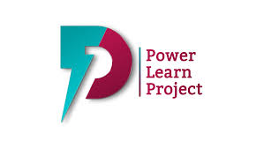
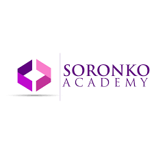
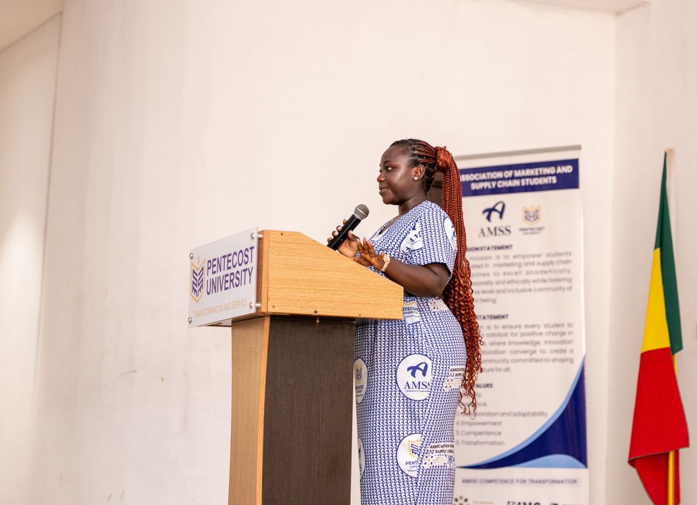
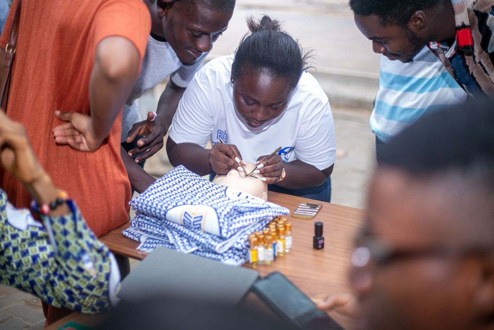

2026 – Present
CC
CURRENT STUDIES
Code Celly School
Software Engineering
September 2026 – Present
My journey combines academic knowledge, professional training and practical experiences. I believe growth comes from staying curious, learning continuously and applying knowledge to real world challenges.
Explore my journey ↓My academic foundation has shaped my understanding of business, marketing, technology and professional development.
Software Engineering
September 2026 – Present
BSc in Marketing
January 2023 – June 2025

Diploma in Business Administration
January 2021 – July 2022
WASSCE, General Arts
September 2017 – September 2020
I continue to develop practical skills through technology, design and professional development programmes.

Software Engineering, MERN Full Stack
July 2025 – December 2025

Graphic Design, UI/UX, WordPress & Digital Marketing
February 2025 – March 2025
Certificate of Achievement: HTML & Python Basics
July 2026
8-Week Career Preparation Programme, Cohort 5
April 2026 – June 2026
Explore my available certificates and professional learning records.
Academic or professional certificate document
Internet Society certification document
As the First Female President of the Association of Marketing & Supply Chain Students at Pentecost University, I led a student association of more than 200 members between 2024 and 2025.
Established the association's official Instagram presence to strengthen its digital communication.
Launched AMSS Wednesdays to encourage student engagement and participation.
Organised branding workshops and digital marketing seminars for more than 100 students.
Led initiatives supporting student engagement, entrepreneurship and academic participation.


I am excited about opportunities that challenge me, expand my knowledge and allow me to make an impact.
Let's connect ↗